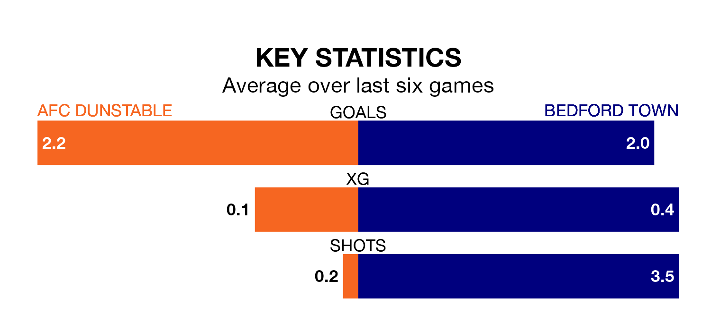

Two of Southern League Division One Central's top sides face each other in Saturday's kick-off, when fourth-placed AFC Dunstable host second-placed Bedford Town.
Dunstable have picked up 12 wins and two draws from 23 games so far this season, and sit four points below the visitors going into the 3pm match.
Bedford, meanwhile, have won 12 and drawn six of 21, picking up 42 points.
With 43 goals in 21 games so far this season, Bedford are scoring more than average in the league with 2.0 goals per game. And they are conceding fewer than average, letting in 18 goals at a rate of 0.9 per game.
Dunstable are also above average scorers, with 2.0 goals per game, compared to a league average of 1.8. They have also conceded 2.0 goals per game.
The home team are in good form in Southern League Division One Central, with four wins and a draw from their last six games.
With two wins and two draws over that period, Town's form is worse – they have taken eight points from 18, compared to Dunstable's 13.
In the last three years, Dunstable and Bedford have played each other on three occasions. Dunstable won two of them and Bedford one.
Their last meeting was on November 4, when Dunstable won 1-0 away.
Dunstable's last match was on January 27, a 2-2 draw against Biggleswade Town.
Bedford beat North Leigh 4-1 last time out, on Tuesday.
Updated: 14:12 (UTC), 02/02/24